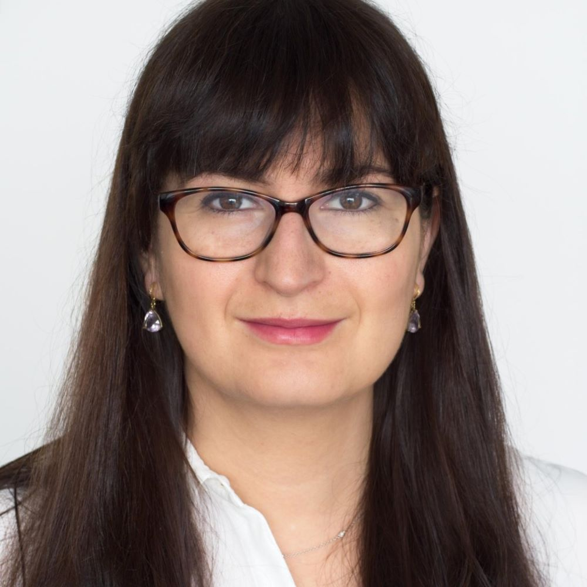

ESSEM 2026 Lecturers

Chrystalina Antoniades
University of Oxford, UK
Photo
Giuseppe Boccignone
University of Milano, Italy
Photo
Olaf Dimigen
University of Groningen, Netherlands
Photo
Ulrich Ettinger
University of Bonn, Germany
Photo
Tom Foulsham
University of Essex, UK
Photo
Sam Hutton
SR Research Limited, UK
Photo
Johanna Kaakinen
University of Turku, Finland

Kristof Keidel
University of Bonn, Germany
Photo
Alan Kingstone
University of British Columbia, Canada
Photo
Christoph Klein
University of Cologne/ National and Kapodistrian University of Athens, Germany/Greece
Photo
Rebekka Lencer
Universität zu Lübeck, Germany
Photo
Päivi Majaranta
Tampere University, Finland

Giulia Manca
eye square GmbH, Germany
Photo
Susana Martinez-Conde
State University of New York, USA
Photo
Sebastiaan Mathôt
University of Groningen, Netherlands
Yannis Paloyelis
King's College London, UK
Photo
Pierre Pouget
INSERM, France
Photo
Rima-Maria Rahal
Vienna University of Economics and Business, Austria
Photo
Nikolaos Smyrnis
National and Kapodistrian University of Athens, Greece
Photo
Marialena Stefanou
King's College London, UK

Peter Trillenberg
University Hospital of Schleswig-Holstein, Germany